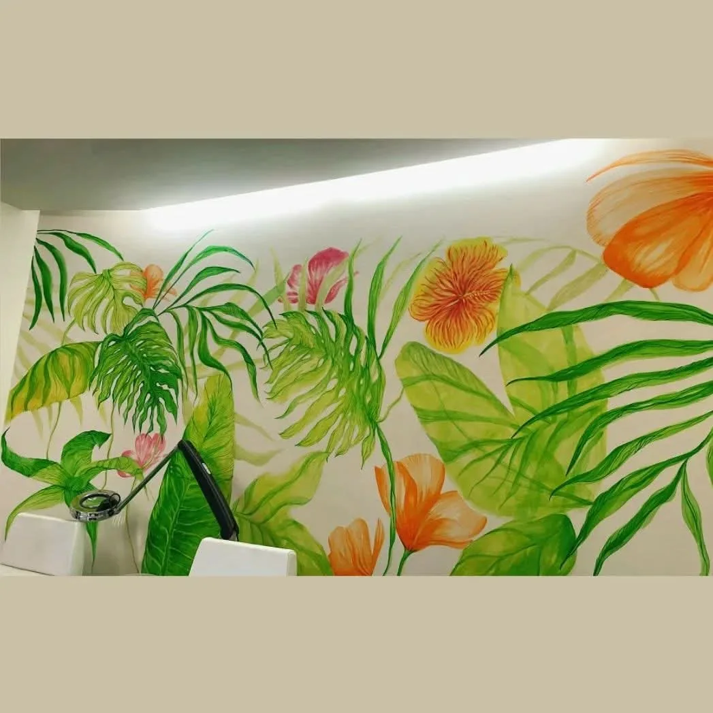
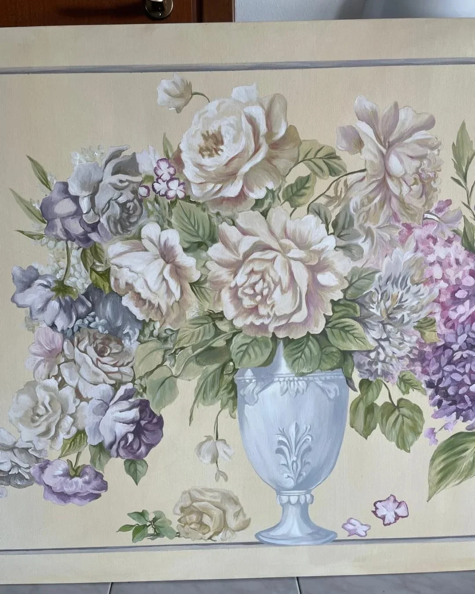
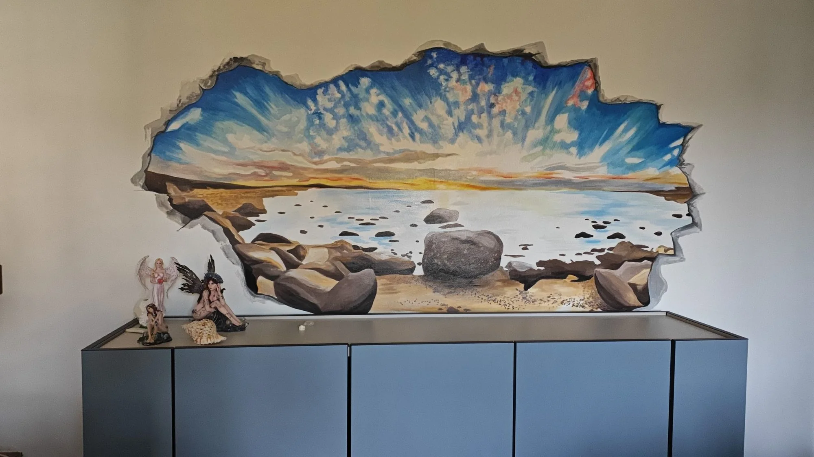
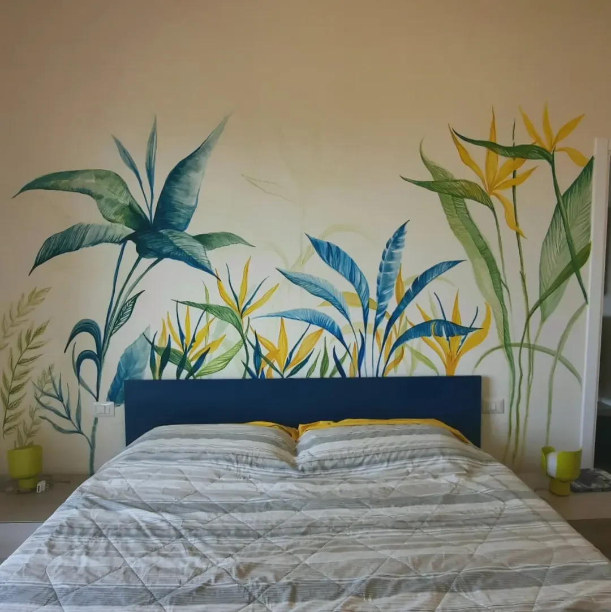
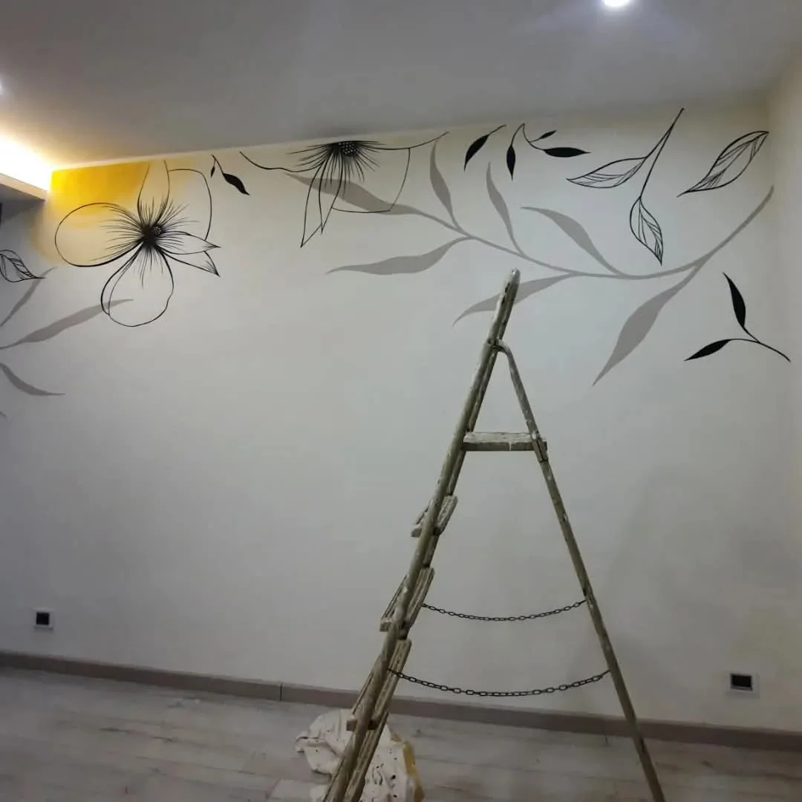

Send me your idea
Even if the idea is still vague, we shape it together. Write on WhatsApp or by email, I reply within 48h.
Cannes
Murals in Cannes for villas, apartments, hotels, boutiques, restaurants, and hospitality spaces.
Tell me what kind of space you have and your idea.
| Simple, floral or botanical motif | 150 € / sqm |
|---|---|
| Detailed, figurative design | 250 € / sqm |
| Trompe-l’oeil, ceiling, faux marble | 350 € / sqm |
| Exterior facade | 150 € / sqm + scaffolding |
No minimum order. Free quote within 48h, no obligation.

Four steps, no commitment before the quote.
Even if the idea is still vague, we shape it together. Write on WhatsApp or by email, I reply within 48h.
A photo and rough dimensions are enough. Tell me the city, the type of place, and whether the wall is indoors or outdoors.
I send you a digital sketch over the photo of your wall, with a detailed quote. Free and with no obligation.
From 150 € per sqm for a simple motif, more if the design is very detailed. We set the date together.
Each project begins with the surface, the light, the proportions, the circulation, and the way the place is lived.
In Cannes, bold, photogenic designs, because these places are photographed constantly during festivals. Everything is painted by hand in acrylic, with no wallpaper and no printing.
No damage. Acrylic bonds to a painted or plastered wall, with no stripping and no heavy undercoat. And if you change your mind in ten years, a roller of paint covers it.
All year indoors. Outdoors you need a salt-blocking primer and a UV-resistant finish, avoiding rainy spells.
Yes. Before any agreement, Giulia shows you the project as an image on your own wall, with a detailed price. You change whatever you want, as many times as needed.
Here, a mural often enters spaces shaped by people arriving, moving through, pausing, and leaving again.
Children’s rooms, kitchens, hallways, entrances, stairwells and ceilings. Example: a flat bedroom wall of 8 sqm in a detailed design, around 2 000 €.
Restaurants, cafes, shops, salons, showrooms, windows and commercial facades. In a market where competitors look alike, a mural is one of the few things that cannot be copied. Example: a hotel suite wall of 12 sqm in trompe-l’oeil, around 4 200 €.
Sea air attacks facades. A salt-blocking primer is essential, with a UV-resistant finish, or colours fade within two summers. For a facade visible from the street, the owner’s or the building association’s approval is usually enough, plus a notice to the town hall in a protected zone. From 150 € per sqm, plus scaffolding if needed.
Cannes runs on seasons and events. The Croisette hotels and suites, the rue d'Antibes boutiques and the flats rented out during festivals all look to stand out in a market where image decides. Work is often done between seasons, outside festival periods. Giulia travels easily to paint: she comes on site to see the wall, or works first from photos and measurements.


The project can stay simple or take on a stronger wall presence. It depends on scale, function, circulation, and the way the wall is seen.
Villas, apartments, and bedrooms where the mural can live with strong light, larger volumes, and refined materials without becoming showy.
Hotels, restaurants, boutiques, and image-led spaces where painting can become a very recognizable and immediately elegant presence.
The project can stay simple or take on a stronger wall presence. It depends on scale, function, circulation, and the way the wall is seen.
Homes, hospitality spaces, portfolio, and nearby pages to explore.

For hospitality spaces where color can change the atmosphere of the place.
Discover
From Cannes, the project can open toward these nearby places.
Murals in French Riviera for villas, homes, hotels, restaurants, boutiques, and wellness spaces.
DiscoverMurals in Nice for apartments, homes, hotels, restaurants, boutiques, and professional spaces.
DiscoverMurals in Monaco for apartments, residences, hotels, boutiques, spas, and professional spaces.
DiscoverMurals in Menton for homes, villas, bedrooms, hotels, restaurants, boutiques, and transitional spaces.
DiscoverMurals in Liguria for homes, hotels, restaurants, guesthouses, boutiques, and hospitality spaces.
DiscoverThe mural of over 20 metres for Gaber and Jannacci, in Milan, in the press
Giulia Dal Bon, trained at the Accademia di Belle Arti di Brera, Milan.
Every project is quoted individually. These are the most requested formats.
What changes the quote: the surface to paint, how complex the design is, interior or exterior, the condition of the wall before preparation, the height and whether scaffolding is needed, the timeline, and the distance from Menton.
To get a quote, send a photo of the wall, its approximate dimensions and the idea you have in mind.
Surfaces: interior wall, exterior facade, ceiling, stairwell, hallway, entrance, children's bedroom, bedroom, living room, kitchen, bathroom, shop window, shutter, garden wall, movable panel.
Places: house, villa, flat, second home, hotel, B&B, holiday rental, restaurant, pizzeria, cafe, bar, ice cream shop, boutique, shop, hair salon, spa, gym, medical practice, waiting room, nursery, office, showroom, wine cellar.
Possible subjects: landscape, floral and botanical motifs, painted sky on a ceiling, perspective trompe-l'oeil, figures, animals, faux marble and faux wood, lettering and painted signs, reproduction of an artwork.
Mural, wall mural, hand-painted wall, wall painting, decorative painting, trompe-l'oeil, painted wall art: different names for the same work in Cannes. Giulia paints by hand in acrylic, indoors and outdoors, with no printing and no wallpaper.
Cannes runs on seasons and events: Croisette hotels and suites, rue d'Antibes boutiques, flats rented out during festivals and conferences.
Giulia also travels to French Riviera, Nice, Monaco, Menton.
The most requested formats are listed above, starting at 450 €. A small mural in a bedroom costs less than a facade that needs preparation and scaffolding. The quote is free and without obligation.
A simple wall takes two to three days of painting. A full room or a very detailed design takes around a week. Add a few days for the sketch and approval.
Yes, with surface preparation and paints made for outdoor use. The seafront takes salt and strong sun. On the Croisette an exterior mural needs light-stable pigments.
For an interior wall, no. For a facade visible from the street, you usually need the owner's or the building association's approval, and a notice to the town hall if the building is in a protected area. Giulia explains the process before starting.
Yes. A mural painted in acrylic can be covered like any wall paint. It can also be reworked or extended later.